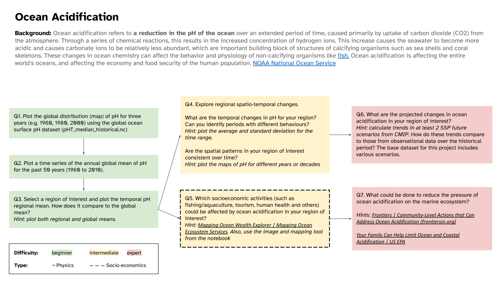

Ocean Acidification#
Content creators: C. Gabriela Mayorga Adame, Lidia Krinova
Content reviewers: Will Gregory, Paul Heubel, Laura Paccini, Jenna Pearson, Ohad Zivan
Content editors: Paul Heubel
Production editors: Paul Heubel, Konstantine Tsafatinos
Our 2024 Sponsors: CMIP, NFDI4Earth
Project Background#
Human activities release CO2 into the atmosphere, which leads to atmospheric warming and climate change. A portion of this CO2 released by human activities is absorbed into the oceans, which has a direct, chemical effect on seawater, known as ocean acidification. When CO2 combines with water in the ocean it forms carbonic acid, which makes the ocean more acidic and can have negative impacts on certain marine ecosystems (e.g., reduce the ability of calcifying organisms to form their shells and skeletons). The degree of ocean acidification is often expressed in terms of the pH of seawater, which is the measure of acidity or alkalinity such that a pH below 7 is considered acidic, and a pH greater than 7 is considered alkaline, or basic. Additional background information on ocean acidification can be found here. In this project, you will explore spatial and temporal patterns of and relationships between pH, CO2, and temperature to assess changes in ocean acidification and the impact on marine ecosystems.
In this project, you will analyse ocean model and observational data from global databases to extract variables like pH, CO2, and temperature, and to investigate ocean acidification process in your region of interest. This project will also be an opportunity to investigate the relationships between these variables as well as their impact on the marine ecosystems.
Project Template#
Note: The dashed boxes are socio-economic questions.
Data Exploration Notebook#
Project Setup#
# google colab installs
# !mamba install
# imports
import random
import numpy as np
import matplotlib.pyplot as plt
import xarray as xr
import pooch
import pandas as pd
import os
import tempfile
from requests.exceptions import ReadTimeout
# helper functions
def pooch_load(filelocation=None,filename=None,processor=None):
shared_location='/home/jovyan/shared/Data/Projects/Ocean_Acidification' # this is different for each day
user_temp_cache=tempfile.gettempdir()
if os.path.exists(os.path.join(shared_location,filename)):
file = os.path.join(shared_location,filename)
else:
file = pooch.retrieve(filelocation,known_hash=None,fname=os.path.join(user_temp_cache,filename),processor=processor)
return file
NOAA Ocean pH and Acidity#
Global surface ocean acidification indicators from 1750 to 2100 (NCEI Accession 0259391)#
This data package contains a hybrid surface ocean acidification (OA) data product that is produced based on three recent observational data products:
Surface Ocean CO2 Atlas (SOCAT, version 2022)
Global Ocean Data Analysis Product version 2 (GLODAPv2, version 2022)
Coastal Ocean Data Analysis Product in North America (CODAP-NA, version 2021), and 14 Earth System Models from the sixth phase of the Coupled Model Intercomparison Project (CMIP6).
The trajectories of ten OA indicators are included in this data product:
Fugacity of carbon dioxide
pH on Total Scale
Total hydrogen ion content
Free hydrogen ion content
Carbonate ion content
Aragonite saturation state
Calcite saturation state
Revelle Factor
Total dissolved inorganic carbon content
Total alkalinity content
These OA trajectories are provided under preindustrial conditions, historical conditions, and future Shared Socioeconomic Pathways: SSP1-1.9, SSP1-2.6, SSP2-4.5, SSP3-7.0, and SSP5-8.5 from 1750 to 2100 on a global surface ocean grid. These OA trajectories are improved relative to previous OA data products with respect to data quantity, spatial and temporal coverage, diversity of the underlying data and model simulations, and the provided SSPs over the 21st century.
Citation: Jiang, L.-Q., Dunne, J., Carter, B. R., Tjiputra, J. F., Terhaar, J., Sharp, J. D., et al. (2023). Global surface ocean acidification indicators from 1750 to 2100. Journal of Advances in Modeling Earth Systems, 15, e2022MS003563. https://doi.org/10.1029/2022MS003563
Dataset: https://www.ncei.noaa.gov/data/oceans/ncei/ocads/metadata/0259391.html
We can load and visualize the surface pH as follows:
# code to retrieve and load the data
# url_SurfacepH= 'https://www.ncei.noaa.gov/data/oceans/ncei/ocads/data/0206289/Surface_pH_1770_2100/Surface_pH_1770_2000.nc' $ old CMIP5 dataset
filename_SurfacepH = 'pHT_median_historical.nc'
url_ncei = 'https://www.ncei.noaa.gov/data/oceans/ncei/ocads/data/0259391/nc/median/'
url_SurfacepH = f'{url_ncei}{filename_SurfacepH}'
try:
print(f'Downloading from {url_ncei}...')
ds_pH = xr.open_dataset(pooch_load(url_SurfacepH,filename_SurfacepH))
except ReadTimeout:
print(f'Downloading from OSF because of a ReadTimeoutError. Please visit {url_ncei} for more datasets.')
link_id = "ac7zg"
download_link = f"https://osf.io/download/{link_id}/"
ds_pH = xr.open_dataset(pooch_load(download_link,filename_SurfacepH))
ds_pH
Downloading data from 'https://www.ncei.noaa.gov/data/oceans/ncei/ocads/data/0259391/nc/median/pHT_median_historical.nc' to file '/tmp/pHT_median_historical.nc'.
Downloading from https://www.ncei.noaa.gov/data/oceans/ncei/ocads/data/0259391/nc/median/...
SHA256 hash of downloaded file: 5a88450b240954e1db5771e06c54278d0dd3e1edbdfcd7b05f25bec3b2c47f1f
Use this value as the 'known_hash' argument of 'pooch.retrieve' to ensure that the file hasn't changed if it is downloaded again in the future.
<xarray.Dataset> Size: 10MB
Dimensions: (time: 18, lat: 180, lon: 360)
Coordinates:
* time (time) float64 144B 1.75e+03 1.85e+03 1.86e+03 ... 2e+03 2.01e+03
Dimensions without coordinates: lat, lon
Data variables:
pHT (time, lat, lon) float64 9MB ...
longitude (lat, lon) float64 518kB ...
latitude (lat, lon) float64 518kB ...
Attributes:
title: Global surface ocean pH on total hydrogen ion scale ...
comment: This gridded data product contains pH on total hydro...
reference: Jiang, L-Q., J. Dunne, B. R. Carter, J. Tjiputra,\n ...
Fair_use_statement: This data product is made freely available\n to th...
created_by: Li-Qing Jiang
institution: (a) Cooperative Institute for Satellite Earth System...
contact: <Liqing.Jiang@noaa.gov>
creation_date: August 14, 2022For those feeling adventurous, there are also files of future projected changes under various scenarios (SSP1-1.9, SSP1-2.6, SSP2-4.5, SSP3-7.0, and SSP5-8.5, recall W2D1 tutorials):
pHT_median_ssp119.nc
pHT_median_ssp126.nc
pHT_median_ssp245.nc
pHT_median_ssp370.nc
pHT_median_ssp585.nc
To load them, replace the filename in the path/filename line above. These data were calculated from CMIP6 models. To learn more about CMIP please see our CMIP Resource Bank and the CMIP website.
For the advanced questions in red you can use sea surface temperature and CO2 concentration from NOAA Global Monitoring Laboratory) which were previously introduced in the tutorials. We can load and visualize this variables as follows:
filename_CO2= 'co2_mm_gl.csv'
url_CO2= 'https://gml.noaa.gov/webdata/ccgg/trends/co2/co2_mm_gl.csv'
ds_CO2 = pd.read_csv(pooch_load(url_CO2,filename_CO2),header=55)
ds_CO2
Downloading data from 'https://gml.noaa.gov/webdata/ccgg/trends/co2/co2_mm_gl.csv' to file '/tmp/co2_mm_gl.csv'.
SHA256 hash of downloaded file: ab8b17caba96640897f711287f6b76eab3d10976066b51edf465b2d22a3a09cc
Use this value as the 'known_hash' argument of 'pooch.retrieve' to ensure that the file hasn't changed if it is downloaded again in the future.
| 1980 | 5 | 1980.375 | 340.44 | 0.09 | 338.89 | 0.08 | |
|---|---|---|---|---|---|---|---|
| 0 | 1980 | 6 | 1980.458 | 339.99 | 0.09 | 339.22 | 0.07 |
| 1 | 1980 | 7 | 1980.542 | 338.44 | 0.16 | 339.28 | 0.07 |
| 2 | 1980 | 8 | 1980.625 | 337.21 | 0.18 | 339.50 | 0.06 |
| 3 | 1980 | 9 | 1980.708 | 337.05 | 0.12 | 339.44 | 0.06 |
| 4 | 1980 | 10 | 1980.792 | 337.82 | 0.08 | 339.17 | 0.07 |
| ... | ... | ... | ... | ... | ... | ... | ... |
| 532 | 2024 | 10 | 2024.792 | 422.34 | 0.10 | 423.85 | 0.06 |
| 533 | 2024 | 11 | 2024.875 | 424.06 | 0.10 | 424.18 | 0.06 |
| 534 | 2024 | 12 | 2024.958 | 425.26 | 0.10 | 424.54 | 0.06 |
| 535 | 2025 | 1 | 2025.042 | 426.05 | 0.10 | 424.89 | 0.06 |
| 536 | 2025 | 2 | 2025.125 | 426.13 | 0.10 | 424.74 | 0.06 |
537 rows × 7 columns
# from W1D3 tutorial 6 we have Sea Surface Temprature from 1981 to the present:
# download the monthly sea surface temperature data from NOAA Physical System
# Laboratory. The data is processed using the OISST SST Climate Data Records
# from the NOAA CDR program.
# the data downloading may take 2-3 minutes to complete.
filename_sst='sst.mon.mean.nc'
url_sst = "https://osf.io/6pgc2/download/"
ds_SST = xr.open_dataset(pooch_load(url_sst,filename_sst))
ds_SST
Downloading data from 'https://osf.io/6pgc2/download/' to file '/tmp/sst.mon.mean.nc'.
SHA256 hash of downloaded file: 577705b952b71abf66baf8710c38baaa87f00922b3f6a80109fdecb62b3e27c8
Use this value as the 'known_hash' argument of 'pooch.retrieve' to ensure that the file hasn't changed if it is downloaded again in the future.
<xarray.Dataset> Size: 2GB
Dimensions: (time: 499, lat: 720, lon: 1440)
Coordinates:
* time (time) datetime64[ns] 4kB 1981-09-01 1981-10-01 ... 2023-03-01
* lat (lat) float32 3kB -89.88 -89.62 -89.38 -89.12 ... 89.38 89.62 89.88
* lon (lon) float32 6kB 0.125 0.375 0.625 0.875 ... 359.4 359.6 359.9
Data variables:
sst (time, lat, lon) float32 2GB ...
Attributes:
Conventions: CF-1.5
title: NOAA/NCEI 1/4 Degree Daily Optimum Interpolation Sea Surf...
institution: NOAA/National Centers for Environmental Information
source: NOAA/NCEI https://www.ncei.noaa.gov/data/sea-surface-temp...
References: https://www.psl.noaa.gov/data/gridded/data.noaa.oisst.v2....
dataset_title: NOAA Daily Optimum Interpolation Sea Surface Temperature
version: Version 2.1
comment: Reynolds, et al.(2007) Daily High-Resolution-Blended Anal...Hints for socio-economic question (dashed boxes):
Use the attached image (Figure 4 in Kroaker et al., 2013 research paper) and this mapping tool. Search for species of interest on the mapping tool to see their spatial global distribution and changes over time. Be critical about what you see.

Summary of effects of acidification among key taxonomic groups. Effects are represented as either mean percent (+) increase or percent (−) decrease in a given response.
Further Reading#
Understanding Ocean Acidification”, NOAA (https://www.fisheries.noaa.gov/insight/understanding-ocean-acidification)
“Ocean acidification and its effects”, CoastAdapt (https://coastadapt.com.au/ocean-acidification-and-its-effects)
“Scientists Pinpoint How Ocean Acidification Weakens Coral Skeletons”, WHOI (https://www.whoi.edu/press-room/news-release/scientists-identify-how-ocean-acidification-weakens-coral-skeletons/)
“Ocean acidification and reefs”, Smithonian Tropical Research Institute (https://stri.si.edu/story/ocean-acidification-and-reefs)
Ocean Acidification | Learn Science at Scitable https://www.nature.com/scitable/knowledge/library/ocean-acidification-25822734/
Henry, J., J. Patterson, and L. Krimsky. 2020. “Ocean Acidification: Calcifying Marine Organisms: FA220, 3/2020”. EDIS 2020 (2):4. https://doi.org/10.32473/edis-fa220-2020.
Lauderdale, J. M., S. Dutkiewicz, R. G. Williams, and M. J. Follows (2016), Quantifying the drivers of ocean-atmosphere CO2 fluxes, Global Biogeochem. Cycles, 30 https://agupubs.onlinelibrary.wiley.com/doi/full/10.1002/2016GB005400
Increasingly Acidic Oceans Are Causing Fish to Behave Badly | Scientific American https://www.scientificamerican.com/article/increasingly-acidic-oceans-are-causing-fish-to-behave-badly/
Other Resources#
This tutorial uses data from the simulations conducted as part of the CMIP6 multi-model ensemble.
For examples on how to access and analyze data, please visit the Pangeo Cloud CMIP6 Gallery
For more information on what CMIP is and how to access the data, please see this page.